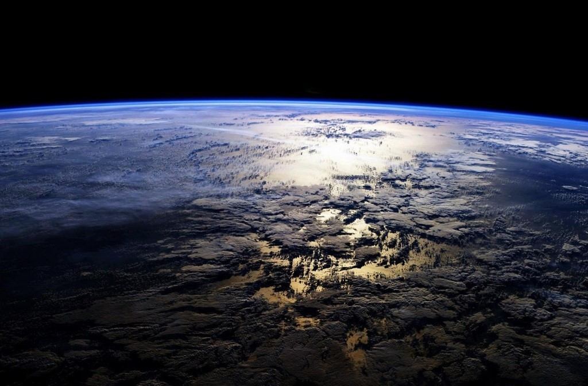
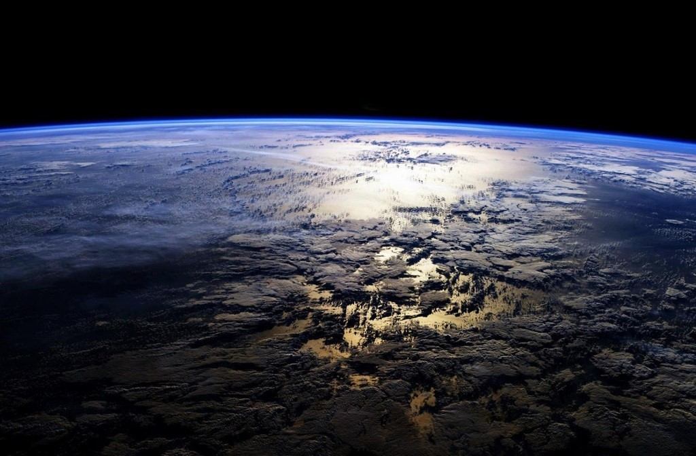

Structure
Earth is composed of four main layers, starting with an inner core at the planet's center, enveloped by the outer core, mantle and crust.The inner core is a solid sphere made of iron and nickel metals about 1,221 kilometers in radius. There the temperature is as high as 5,400 degrees Celsius. Surrounding the inner core is the outer core. This layer is about 2,300 kilometers thick, made of iron and nickel fluids. In between the outer core and crust is the mantle, the thickest layer. This hot, viscous mixture of molten rock is about 2,900 kilometers thick and has the consistency of caramel. The outermost layer, Earth's crust, goes about 30 kilometers deep on average on land. At the bottom of the ocean, the crust is thinner and extends about 5 kilometers from the sea floor to the top of the mantle.
Size
With a radius of 6,371 kilometers, Earth is the biggest of the terrestrial planets, and the fifth largest planet overall. From an average distance of 150 million kilometers, Earth is exactly one astronomical unit away from the Sun because one astronomical unit (abbreviated as AU), is the distance from the Sun to Earth. This unit provides an easy way to quickly compare planets' distances from the Sun. It takes about eight minutes for light from the Sun to reach our planet.
 

Surface
Like Mars and Venus, Earth has volcanoes, mountains and valleys. Earth's lithosphere, which includes the crust (both continental and oceanic) and the upper mantle, is divided into huge plates that are constantly moving. For example, the North American plate moves west over the Pacific Ocean basin, roughly at a rate equal to the growth of our fingernails. Earthquakes result when plates grind past one another, ride up over one another, collide to make mountains, or split and separate.